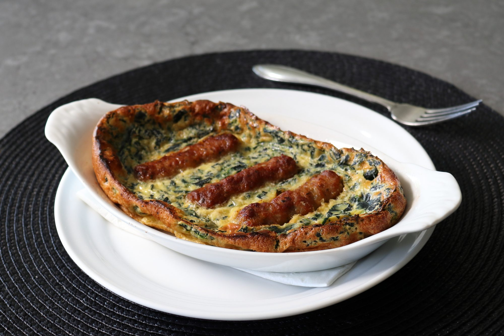

Sausage and Kale Dutch Baby

Ingredients
- 1 small bunch stemmed kale
- 1 tablespoon unsalted butter
- 6 cooked breakfast sausage links
- ½ cup all-purpose flour
- 2 large eggs
- 1 ½ teaspoons maple syrup
- 1 teaspoon kosher salt
- 1 pinch freshly ground black pepper
- 1 pinch cayenne pepper
- ½ cup whole milk
Directions (step-by-step)
- Place a pot of lightly salted water over high heat and bring to a brisk boil. Add kale and boil until leaves just start to get tender, 3 to 4 minutes. Place kale into a bowl of cold water, then drain. Gently squeeze out as much excess water as possible and roughly chop kale; set kale aside. You will need about 1/2 cup of chopped kale.
- Melt 1 tablespoon butter in a skillet over medium heat. Cook sausage links until browned, 2 minutes per side. Remove from skillet.
- Use butter and fat from cooking to grease two 9-ounce baking dishes.
- Whisk together flour, eggs, maple syrup, salt, pepper, and cayenne in a bowl. Whisk until flour disappears. Pour in milk and whisk to combine. Stir in about 1/2 cup chopped kale and mix in with a fork.
- Ladle mixture into prepared baking dishes - the depth of the batter needs to be about 1/2 inch deep. Place sausage links on top of the mixture.
- Place dishes in the center of a cold oven. Turn heat to 500 degrees F (260 degrees C) and leave in for about 25 minutes. Remove and serve.
Return to the top
Return home